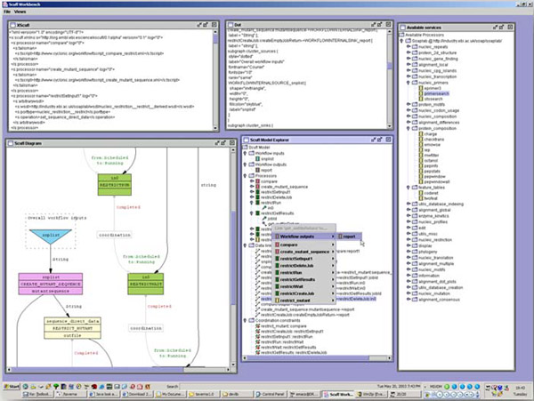

Version 0.1.beta4, 12th June 2003, tmo@ebi.ac.uk
Modified for beta8, 23rd Feb 2004, tmo
This document describes the Scufl Workbench application and provides basic documentation on how to use this application to build or edit workflows.
This point release of the Taverna project contains an application called the Scufl Workbench. This is intended to allow you to create, edit and otherwise tinker with workflows based on the Scufl language. It is not in its final form, but there is sufficient editing functionality to produce new workflows that are at least vaguely functional. An instance of the workbench contains exactly one Scufl model, and provides zero or more arbitrary view and controller components over that model. It looks something like this :

win32 : double click on the runme.bat
others : you'll need to launch it manually, examine the batch file (and contribute
the script back!)The binary release incorporates a copy of the win32 version of the dot tool and its associated libraries. If you have java in your path and are on a moderately recent version of windows you should be able to simply double click on the batch file. Note that if you are behind a firewall and require a web proxy, such as in Nottingham, you will need to add the -Dhttp.proxyPort and http.proxyHost properties to the java invocation in the batch file. If the application seems to hang whenever you load a processor or a workflow this is the most likely cause.
The workbench is intended to act as a container to assorted user interface components. These components act as either views, controllers or both on the underlying ScuflModel instance. For example, the graphical view is only a view, the service panel only a controller and the explorer an example of both roles. View components respond to model events, so they will always display the current state of the model, there is no need to explicitly refresh them. The available components in this release are as follows.
- Scufl model explorer
This shows the state of the current model as a tree. At the top level are the different types of entities within a scufl model - overall workflow inputs and outputs, processors, data links and coordination controls. Processor nodes may be expanded to reveal their inputs and outputs. Most nodes have context menus associated with them, see the 'how do I...' section for more information, or just have a play around.- XScufl view
This shows the current model as XScufl. This is what will be saved if you select 'Save as XScufl' from the file menu. It is not editable, and merely presents a view on the model.- Dot view
Similarly to the XScufl view, this shows the dot text for the current model. This was really only so I could figure out what was going wrong with the graphical display, but you might find it interesting.- Graphical view
This shows a graphical view of the workflow. This view requires you to have the dot tool and its associated libraries installed on your machine, and present on the path, otherwise the application won't be able to find it. This component sends the dot view to dot, reading the result back into a buffered image and updating the display.- Available service panel
This panel shows potential processors that can be added to the workflow model. It is entirely a controller, there is no workflow state reflected in it. Initially it is configured to show the services available through soaplab at the EBI, and also show the xembl service as an example of a WSDL processor creator (I'm not sure whether the xembl service is actually maintained). Context menus on this component allow you to add new processors to the workflow, and also to add new scavengers - components that fetch sets of service factories - to the service panel- Run Workflow panel.
Allows you to specify inputs to the workflow and launch a local instance of the enactor. This is actually sufficiently functional for real use, but in particular for myGrid developers it provides a way to test that your workflows can actually run.These components may be displayed, or additional instances created, by selecting the appropriate option from the 'view' menu in the main window. The 'file' menu provides import, export and model reset operations.
- ...add my services to the service panel?
You need to create a new scavenger. Right click on the 'Available Processors' node at the top of the service panel. This should give you a menu from which you can choose which type of scavenger you want.
- WSDL services - this is the most common type of scavenger you will want to create, and supposes that you have some web service somewhere that you want to add to your workflow. You need to enter the location of the WSDL into the dialog that appears, and the workbench should go away, look at the WSDL file, extract all available port types and operations and display them in the service panel.
- Soaplab services - to add a new soaplab installation to the service panel you need to specify the base URL to the soaplab analysis service. For example, if your soaplab installation has its analysis factory endpoint at http://foo.bar/soaplab/AnalysisWS then you should give the argument http://foo.bar/soaplab/ to create the scavenger.
- Talisman scripts - to add new scripts to the service panel you right click, select 'new talisman scavenger' and enter the URL for the tscript file.
- Nested workflows - to add new workflow definitions which can then be either imported as a complete workflow or used as a 'black box' component you should enter the URL for the xscufl definition file in the obviously appropriate place.
- ...import services from my workflow into the service panel?
The context menu described above to add new scavengers has an additional option to collect scavengers from your current scuf model. This will attempt to locate appropriate scavenger modules that would be capable of building the processors found in your model definition. Specifically, it will look for any references to WSDL documents it doesn't already know about and import those.- ...find workflows etc?
Although we intend in the longer term to link this functionality into the find service and the various service registries (myGrid, biomoby, UDDI etc) you can currently use the rather quick and sysadmin enraging hack built into the editor. Specifically, you can instigate a web crawl which will attempt to locate xscufl and tscript files and add them to the scavenger panel. Accessible from the 'collect from web' context menu in the services panel, this is pointed as a default at the myGrid cvs web server, and will find all of Peter's workflows.- ...create a new service in the workflow?
Assuming you have correctly created the appropriate scavenger (see above), you should be able to add an instance of any service within the service selection panel by expanding the service selection tree until you have a processor factory node (denoted by the coloured chip icons). Right clicking on this node will give you a menu with the 'add to workflow' option, selecting this will in turn give you a dialog requesting a name for the new service, assuming your name is valid (i.e. alphanumeric plus the underscore character and not matching anything already in the workflow) this will create a new processor in the workflow; the addition should be reflected immediately in any view components you have open.- ...change the description or the amount of logging my service provides?
To alter the properties (description and log level) of a service in the workflow you should select the 'properties...' option from the context menu of the processor you want to change in the Scufl Model Explorer panel. This will then display a properties pane for that processor, allowing you to edit the description, change the log level and view the other properties specific to that processor instance.- ...link services in the workflow together?
You link two processors, or a processor and an external port, by using the context menu in the Scufl Model Explorer panel. Specifically, you always link from an output port to an input port, so the link menu will only appear if you click on an output port (or a workflow input). If you cannot see any output ports, you may need to expand the processor node to show them. Right clicking on an output port brings up a menu from which you can select an input port to link to, selecting the port will create the link, and the views should reflect the change.- ...create new workflow inputs and outputs?
The 'Workflow inputs' and 'Workflow outputs' nodes in the Scufl Model Explorer have an option in their right click menus to create a new input or output. Selecting this option will bring up a dialog box into which you must enter the name for the port. Assuming your name is valid, the port will be created and the views will reflect the change.- ...load and save workflow definitions?
The 'file' menu in the top level menu bar provides these functions. You can import a workflow into the existing model (note that this does not clear the model, it adds components subject to name clashes), save the current model as XScufl, save as dot (three versions, choose the one you want from the submenu) or clear the current model. If you want to completely restart the model from a new workflow, you'll need to clear it then import.- ...load a workflow from the web?
The 'file' menu contains an option to load an XScufl definition file from a URL. You simply enter the URL to your definition and the editor will import it into the model. Alternatively, if the workflow has already been located as a nested workflow in the service selection panel you can add it from there, right click on the workflow in the tree and select 'import workflow' from the menu.- ...delete things from my workflow?
In general if it is possible to delete something from the workflow there will be a 'remove from model' option in the right click menu available from the Scufl Model Explorer panel. To completely reset the workflow you should use the 'Reset model data' option in the 'file' menu of the main window.- ...create coordination constraints?
The only kind of coordination constraint the enactor currently supports is one that prevents a processor moving from scheduled to running until another processor has completed. To create an instance of this kind of constraint, you can use the context menu on a processor node in the scufl model explorer panel. Select the processor that you want to be controlled by the constraint, then choose the processor that guards the state transition from the submenu, you should see the new constraint in any open views you happen to have.- ...change the graphical display?
There are three possible policies for the graphical display; display no ports, only display bound ports and display everything. If you right click on the graphic display panel you should see a menu, choose the appropriate policy and the display will update. The default value is to show only bound ports, this is a sensible comprimise between information richness and diagram size, but the other values have their uses. Have a play. In addition to this, you can tell the display to scale to the window, but be aware that this is highly non optimized (read, horribly slow on some machines).- ...run the workflow? (modified for beta8)
In order to run a workflow you must open the Run Workflow Panel from the Tools and Workflow Invocation menu. This panel displays a tree of all the input ports to the workflow. You can add any number of input values to each input port, either by creating new values, or by loading a selection of files as input values. The input values will appear as children to the inpurt port in the tree, and each can be clicked on to bring up an editor, where you can load in a value from a file or from a url or remove that input value. The root of the tree, Input Document, allows you to view the input document to the workflow, and to load and save it. The Run Workflow button will launch the enactor locally, and in turn show an enactor run dialog containing the statii of the processors, results assuming the workflow terminates successfully and provenance information in any case.
After launching a workflow, there will be lots of data flowing through it. The Run Workflow Panel opens an enactor run dialog box containing information about the current state of each processor. If the workflow has terminated successfully, this will also display the final results of the workflow. The final result, and intermediate inputs and outputs are all displayed in the same way. The left-hand side of the display shows an over-view of the data items. If there are multiple items, this is shown as a tree. The right-hand side of the display shows a detailed view of the data. If you click on an item in the left-hand view, it will become the active item in the right-hand side, replacing whatever was there before. This will be displayed using the default viewer for that type. This may take into account the mime-type of the data or any other information.
- In different situations, you may wish to view the same data type in a different way. For example, view a URL as a link, or as the data at the end of the URL. Taverna supports this by allowing you to select the viewer you wish to use. Right-click the data you wish to view. This will bring up a pop-up menu. The menu will contain a sub-menu called 'veiwers'. This contains a list of all viewers that are registered for the current data-type. Selecting a viewer will change how the data on the right-hand side is displayed, for example, allowing you to view graphviz text as raw text rater than as a graph.
- The Table viewer allows you to display multiple data items in a tabular form. Each row correspnds to one of the items, and each column is a property of that data item. For example, you could display both the raw text and the graphical view of graphviz text side-by-side. To enable the table view, right-click the data item you wish to display. If you want to display all of the data items, then click the folder icon in the tree containing them all. Chose the "Table" option under "Viewers". The righ-hand side of the display will now be replaced by a table containing one column for each property of each data item. You can manipulate the columns by right-clicking the column titles. There are options to add and remove columns, change the name or the viewer for that column, and to edit any options that alter how the data in the column is extracted.
- Once you have added a new column, you can alter how it finds the data by choosing the "Edit" option on the pop-up menu for that column. This will bring up a dialog box that allows you to customise the column. Each different type of column will have it's own dialog box. For example, Regular expression columns will allow you to decide upon the regular expression matched against the text. The results of matches will then be displayed in the column.